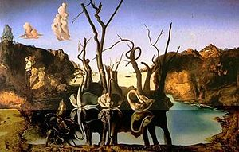
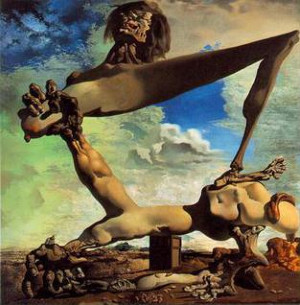
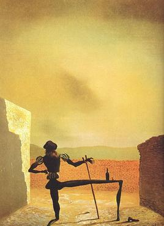
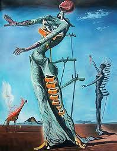
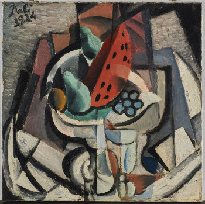
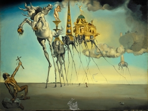
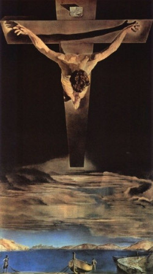
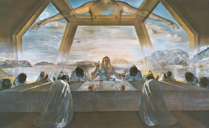

Swans Reflecting Elephants, 1937, oil on canvas

Soft construction with boiled beans (premonition of civil war), 1936, oil on canvas
Metamorphosis of Narcissus, 1937, Oil Paint
Surrealism
Below are some more examples of Surrealism by Salvador Dali
Gala of Spheres, 1952, oil on canvas

The Ghost of Vermeer, 1934, oil on canvas

Metamorphosis of Narcissus, 1937, oil on canvas
Cubism
Below are some more examples of Cubism art by Salvador Dali
Crucifixion Hypercube, 1954, oil on canvasThe Ghost of Vermeer, 1934, oil on canvas

Still Life. Watermelon, 1924, Oil Paint
More Art Work!
Below are some more art by Salvador Dali

The Temptation of St. Anthony, 1946, oil on canvas

Christ of Saint John of the Cross, 1934, oil on canvas

Still Life. Watermelon, 1951, Oil Paint